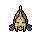
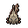

Pokédex / #369

Relicanth #369
WaterRock
It has remained unchanged for 100 million years. It was discovered during a deep-sea exploration.
Generation 3 · Hoenn

Stats
| Attack | 90 | |
|---|---|---|
| Defense | 130 | |
| Sp. Atk | 45 | |
| Sp. Def | 65 |
In the wild
| Wild level | 40–50 |
|---|---|
| HP | 100 |
| Experience | 10 |
| Egg groups | Water 1, Water 2 |
Evolution
- Does not evolve.
Moves
| Level | Move | Type | Category | Power | Energy | Cooldown | Effect | |
|---|---|---|---|---|---|---|---|---|
| 1 | Tackle | Normal | Physical | 15 | 15 | 1s | Tackle is one of the most common and basic moves a Pokemon learns. It deals damage with no additional effects. | |
| 5 | Water Gun | Water | Special | 40 | 45 | 9s | Water Gun inflicts damage and has no secondary effect. | |
| 10 | Smack Down | Rock | Physical | 50 | 50 | 9s | The user throws a stone or similar projectile to attack an opponent. A flying Pokemon will fall to the ground when it's hit. | |
| 15 | Rock Tomb | Rock | Physical | 60 | 70 | 13s | Rock Tomb does damage and lowers the opponent's speed one stage. | |
| 20 | Ancient Power | Rock | Special | 60 | 70 | 14s | Ancient Power inflicts damage and has a 10% chance of raising all of the user's stats by one stage. | |
| 25 | Take Down | Normal | Physical | 90 | 90 | 14s | Take Down deals damage and has no secondary effect. | |
| 30 | Rock Slide | Rock | Physical | 38 | 85 | 17s | Rock Slide deals damage and has a 30% chance of causing the target to flinch. | |
| 35 | Rest | Psychic | Status | – | 100 | 180s | User sleeps for 5 seconds, but user is fully healed. | |
| 40 | Dive | Water | Physical | 80 | 100 | 20s | Dive does damage and has no secondary effect. | |
| 45 | Harden | Normal | Status | – | 70 | 60s | Harden raises the user's Defense by one stage. | |
| 50 | Double-Edge | Normal | Physical | 120 | 120 | 18s | Double-Edge deals damage and has no secondary effect. | |
| 55 | Flail | Normal | Physical | 100 | 100 | 18s | Flail inflicts damage. Its power is higher when the user's HP is lower. | |
| 60 | Head Smash | Rock | Physical | 150 | 150 | 25s | Head Smash does damage and has no secondary effect. | |
| 65 | Yawn | Normal | Status | – | 100 | 95s | In the turn that Yawn is used, the only effect will be the user yawning at the target. At the end of the next turn, the target (if still active) will fall asleep unless it gets affected by a major status condition in the meantime, a status-protecting move is used (like Safeguard or Uproar), or the battle ends. | |
| 70 | Hydro Pump | Water | Special | 110 | 120 | 27s | Hydro Pump inflicts damage and has no secondary effect. |
Field abilities
SurfDiveWaterfallRock Smash
Special abilities
Rock HeadSwift Swim
Egg moves
Zen HeadbuttWater SportSkull BashMuddy WaterMud-SlapMud ShotMagnitudeBrineAqua TailAmnesia
Technical machines
BlizzardCalm MindDouble TeamEarthquakeHailHyper BeamIce BeamProtectRain DanceRestRock SlideRock TombSafeguardSandstormSubstituteToxic
Drops
| Item | Amount | Chance | |
|---|---|---|---|
| water gem | 1–9 | 97.2% | |
| razor fang | 1 | 83.3% | |
| pot of water | 1 | 23.3% | |
| stone orb | 1 | 23.3% | |
| cutting fang | 1 | 11.7% | |
| heavy stone | 1 | 11.7% | |
| onigiri | 1–5 | 5% | |
 | relicanth doll | 1 | 0.1% |
| Splash Plate | 1 | 0.025% | |
| Stone Plate | 1 | 0.025% | |
| held mystic water | 1 | 0.02% | |
| held hard stone | 1 | 0.02% | |
| TM 12 | 1 | 0.005% | |
| TM 10 | 1 | 0.005% |